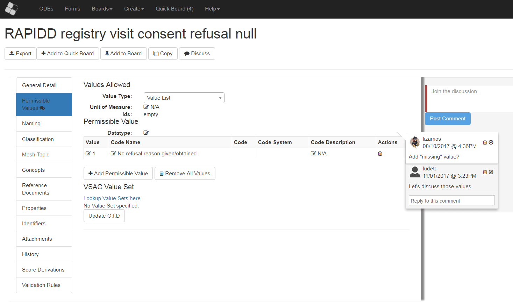
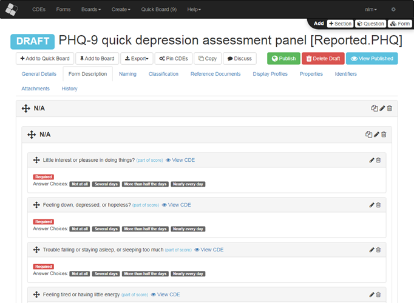
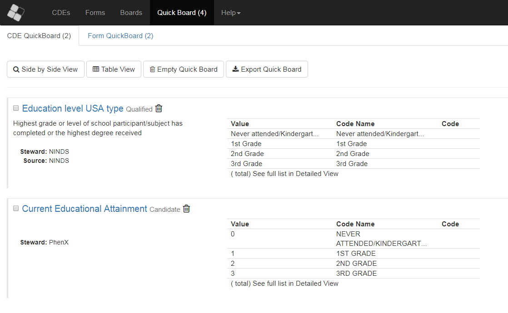
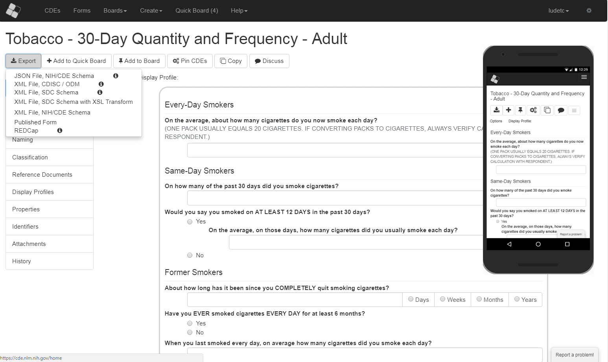

<section class="sectionPage" style="background-color: #eee; padding: 10px; padding-bottom: 40px">
    <div class="" style="padding: 2rem 1rem; margin-bottom: 0;">
        <div class=" mt-0 mt-sm-5" >
            <div class="row align-items-center">
                <div class="col-lg-3 col-12 ">
                    
                    <div>
                        <p>The NIH Common Data Elements (CDE) Repository has been designed to provide access to structured
                            human and machine-readable definitions of data elements that have been recommended or required by
                            NIH Institutes and Centers and other organizations for use in research and for other purposes.
                        </p>
                        <p>
                            Visit the
                            <a class="homeDescriptionLink" href="http://cde.nih.gov" target="_blank" rel="noopener">NIH CDE Resource Portal</a>
                            for contextual information about the repository.
                        </p>
                    </div>
                </div>
                <div class="col-lg-6 hidden-sm-down">
                    <ngb-carousel style="margin: auto">
                        <ng-template ngbSlide>
                            
                            <div class="carousel-caption">
                                <h3>Search, Discuss and Collaborate</h3>
                            </div>
                        </ng-template>
                        <ng-template ngbSlide>
                            
                            <div class="carousel-caption">
                                <h3>Create, Draft and Share</h3>
                            </div>
                        </ng-template>
                        <ng-template ngbSlide>
                            
                            <div class="carousel-caption">
                                <h3>Compare and Harmonize</h3>
                            </div>
                        </ng-template>
                        <ng-template ngbSlide>
                            
                            <div class="carousel-caption">
                                <h3>Track Changes Across Versions</h3>
                            </div>
                        </ng-template>
                        <ng-template ngbSlide>
                            
                            <div class="carousel-caption">
                                <h3>Export and Publish in Multiple Formats</h3>
                            </div>
                        </ng-template>
                    </ngb-carousel>
                </div>
                <div class="col-lg-3 col-12 btn-group-vertical text-center" id='searchDiv'>
                    <a routerLink="/cde/search" id="browseCdes" class="btn btn-lg btn-outline-secondary mt-1">
                        <i class="fa fa-search"></i> Browse CDEs</a>
                    <a routerLink="/form/search" id="browseForms" class="btn btn-lg btn-outline-secondary mt-1">
                        <i class="fa fa-search"></i> Browse Forms</a>
                    <a (click)="takeATour();" id="takeATourBtn" class="btn btn-lg btn-outline-secondary mt-1">
                        <i class="fa fa-flag discussWrench"></i> Interactive Tour</a>
                </div>

            </div>
        </div>
    </div>
    <!--<a routerLink="/home" fragment="formFeatures" class="hidden-sm-down">-->
        <!--<div class="morePagesText">What are some Form Features?</div>-->
    <!--</a>-->
</section>
<!--<section class="sectionPage container" id="formFeatures" style="margin-top: 40px">-->
    <!--<h1>Form Features</h1>-->
    <!--<div class="row pt-3">-->
        <!--<div class="col-12 col-sm-4 col-lg-3">-->
            <!--<ul class="btn-group-vertical p-3 w-100" style="border-radius: 20px; border: solid lightgrey 3px; background-color: white">-->
                <!--<li *ngFor="let f of formFeatures" class="btn btn-outline-primary"-->
                    <!--style="border-radius: 20px; border-color: lightgray"-->
                    <!--[style.border-width]="currentFormFeature === f ? '2px' : '0'"-->
                    <!--(click)="getForm(f)">{{f.feature}}-->
                <!--</li>-->
            <!--</ul>-->
            <!--{{formFeatureDescription}}-->
        <!--</div>-->

        <!--<div class="col-12 col-sm-8 col-lg-9">-->
            <!--&lt;!&ndash;<div class="p-3" style="background-color: black; border-radius: 20px; color: #fff; font-weight: 900">&ndash;&gt;-->
                <!--&lt;!&ndash;{{formFeatureDescription}}&ndash;&gt;-->
            <!--&lt;!&ndash;</div>&ndash;&gt;-->
            <!--<cde-native-render [elt]="elt" [profile]="null" class="d-block p-3 nativeRender"-->
                               <!--style="min-height: 30vh; border-radius: 20px; border: solid lightgrey 3px; background-color: white"></cde-native-render>-->
        <!--</div>-->
    <!--</div>-->
    <!--&lt;!&ndash;<a routerLink="/home" fragment="started">&ndash;&gt;-->
        <!--&lt;!&ndash;<div class="morePages morePagesXsUnder morePagesFromText morePagesToCircle contentStartedFrom"></div>&ndash;&gt;-->
    <!--&lt;!&ndash;</a>&ndash;&gt;-->
<!--</section>-->
<!--<section class="container" id="started">-->
    <!--<div class="row">-->
        <!--<div class="col-12 col-sm-6 mt-5">-->
            <!--<div class="btn-group" ngbRadioGroup [(ngModel)]="statsType"-->
                 <!--style="float: right; margin-top: 6px; border: 1px solid; border-color: #fff #fff #ddd;"-->
                 <!--[hidden]="cdeFormSelection !== 'both'">-->
                <!--<label ngbButtonLabel class="btn-primary" (click)="statsType = 'Forms'; getStats()">-->
                    <!--<input ngbButton type="radio" [value]="'Forms'">Forms-->
                <!--</label>-->
                <!--<label ngbButtonLabel class="btn-primary" (click)="statsType = 'CDEs'; getStats()">-->
                    <!--<input ngbButton type="radio" [value]="'CDEs'">CDEs-->
                <!--</label>-->
            <!--</div>-->
            <!--<span class="featuredHeading"-->
                  <!--style="float: right; margin-top: 5px; border: 1px solid; border-color: #fff #fff #ddd;"-->
                  <!--[hidden]="cdeFormSelection !== 'cdeOnly'">CDEs</span>-->
            <!--<span class="featuredHeading"-->
                  <!--style="float: right; margin-top: 5px; border: 1px solid; border-color: #fff #fff #ddd;"-->
                  <!--[hidden]="cdeFormSelection !== 'formOnly'">Forms</span>-->
            <!--<ngb-tabset #tbset="ngbTabset" (tabChange)="getStats($event.nextId)">-->
                <!--<ngb-tab id="tabFeatured">-->
                    <!--<ng-template ngbTabTitle><i class="fa fa-star" aria-hidden="true"></i></ng-template>-->
                    <!--<ng-template ngbTabContent>-->
                        <!--<div class="bordered-tab">-->
                            <!--<div class="featuredHeading">Featured Forms</div>-->
                            <!--<ul>-->
                                <!--<li *ngFor="let item of featuredItems['Forms']">-->
                                    <!--<a routerLink="/formView" [queryParams]="{tinyId: item.tinyId}">{{item.name}}</a>-->
                                <!--</li>-->
                            <!--</ul>-->
                        <!--</div>-->
                    <!--</ng-template>-->
                <!--</ngb-tab>-->
                <!--<ngb-tab id="tabTop">-->
                    <!--<ng-template ngbTabTitle><i class="fa fa-arrow-up" aria-hidden="true"></i></ng-template>-->
                    <!--<ng-template ngbTabContent>-->
                        <!--<div class="bordered-tab">-->
                            <!--<div class="featuredHeading">Most Viewed CDEs</div>-->
                            <!--<ul>-->
                                <!--<li *ngFor="let item of topItems['CDEs']">-->
                                    <!--<a routerLink="/deView" [queryParams]="{tinyId: item.tinyId}">{{item.name}}</a>-->
                                <!--</li>-->
                            <!--</ul>-->
                        <!--</div>-->
                    <!--</ng-template>-->
                <!--</ngb-tab>-->
                <!--<ngb-tab id="tabNew">-->
                    <!--<ng-template ngbTabTitle><i class="fa fa-plus-square" aria-hidden="true"></i></ng-template>-->
                    <!--<ng-template ngbTabContent>-->
                        <!--<div class="bordered-tab">-->
                            <!--<div class="featuredHeading">Newest {{statsType}}</div>-->
                            <!--<ul>-->
                                <!--<li *ngFor="let item of newItems[statsType]">-->
                                    <!--<a routerLink="/{{statsType==='CDEs'?'de':'form'}}View"-->
                                       <!--[queryParams]="{tinyId: item.tinyId}">{{item.name}}</a>-->
                                <!--</li>-->
                            <!--</ul>-->
                        <!--</div>-->
                    <!--</ng-template>-->
                <!--</ngb-tab>-->
            <!--</ngb-tabset>-->
        <!--</div>-->
        <!--<div class="col-12 col-sm-6 mt-5">-->
            <!--<p>The NIH Common Data Elements (CDE) Repository has been designed to provide access to structured-->
                <!--human and machine-readable definitions of data elements that have been recommended or required by-->
                <!--NIH Institutes and Centers and other organizations for use in research and for other purposes.-->
                <!--Visit the-->
                <!--<a class="homeDescriptionLink" href="http://cde.nih.gov" target="_blank">NIH CDE ResourcePortal</a>-->
                <!--for contextual information about the repository.</p>-->
            <!--<p>The Repository is a platform for identifying related data elements in use across diverse areas,-->
                <!--for harmonizing data elements,and for linking CDEs to other existing standards and terminologies,-->
                <!--including the value sets in the-->
                <!--<a id="vsacLink" class="homeDescriptionLink" href="http://vsac.nlm.nih.gov" target="_blank">Value Set-->
                    <!--Authority Center (VSAC).</a></p>-->
        <!--</div>-->
    <!--</div>-->
<!--</section>-->
